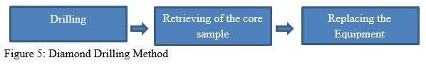

The Philippine Mining Law states that
the state claims all the Mineral resources in the country.
There must be a permit or an agreement with the government could be from the different branches of the DENR (like the MGB),
the National Commission of Indigenous Peoples, and also from two of the three local governments of the area where the extractions
happens before extraction begins these agreements would consist of Exploration permits, Mineral agreements, Financial or Technical
Assistance Agreement, The Qualified persons, Government Involvement and Environmental Matters. Under supervision of James Climie,
MRL Gold would be working on geological mapping, ground magnetic survey, rock sampling, pitting, trenching and drilling. Geologic surveys
would consist of aeromagnetic surveys and ground magnetic surveys to detect anomalies within the area of extraction. Exploration of the
area would consist of rock sampling and trenching around the West Drift-Bukal Area (Abrasaldo, Climie, Lab-oyan, & de los Santos, 2004).
The process used in the Lobo project is diamond core drilling. Diamond core drilling modified the mining industry and led to the discovery
of many orebodies. There are 3 major operations that happen during the process. First, is the actual drilling into the ground. A “diamond bit”
is used, that is why it is called as it is. A ring-shaped drill bit equipped with diamond is forced to the ground and is rotated clockwise at a
high speed. Second, a core sample is cut out from the rock and now can be retrieved and analyzed at the surface. Third, getting a new equipment
with lubricated tube to resume the cycle (McCoremick, 2016).